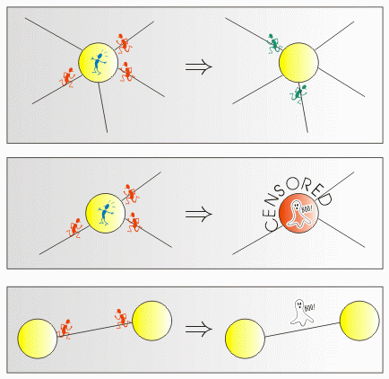

|
|||||||||||||||||
|
Server time: 2006-01-10 05:48:21 |
SPOJ Problem Set215. Panic in the PlazasProblem code: PANIC
Have you ever heard of the BBFO? The Bytelandian Bit-eating Fanatic Organisation regards itself as a collection of people with slightly unorthodox views on law and order in the world, and is regarded by others as the most wildly dangerous and unpredictable terrorist organisation which afflicts the small and otherwise peaceful country of Byteland. Intelligence reports claim that the next act of violence to be performed by the BBFO is a widescale, distributed bomb attack in the Bytelandian capital. Therefore, all precautions have been undertaken to prevent any such action. The BBFO, seeing the futility of their original scheme, decided to change the plan of action. The new idea is endowed with devilish simplicity. The capital of Byteland is a network of plazas, some of which (but not necessarily all) are connected by bidirectional streets of different length. Crowds of people are sitting at all the plazas, sipping coffee and generally relaxing. The terrorists plan to creep up to some of the plazas armed with inflatable paper bags. Then, exactly at midday, all the bags will be burst in such a way as to simulate the bang of a bomb. Panic will ensue at the plazas where the bags were burst, and will spread throughout some of the city. Panic breaks out at a plaza the moment a bag explodes in it, or immediately after a panicking crowd rushes into the plaza from at least one of the side streets. The people in the plaza then split up into crowds, which rush out by all possible streets except those by which people have just run in. After entering a street, a crowd runs along it at constant speed until it reaches the plaza at the other end, causing panic there, etc. If there is no possible way of escape from a plaza, everybody in it perishes. Similarly, if two crowds rushing in opposite directions collide in mid-street, all the people are lethally trampled. Despite the panic, people in the city retain a little free will. They don't move at all until the panic reaches them, but when they have to escape, they can always choose the escape route from a plaza that suits them best. Assuming you were to sit in one of the plazas of Byteland at noon that fateful day... which plaza would you choose to sit in? All your normal preferences concerning the quality of coffee in the cafes are temporarily forgotten, and your only aim is to survive as long as possible.
InputThe first line of input contains a single integer t<=500, the number of test cases. t test cases follow. Each test case begins with a line containing three integers n m k (1<=n<=50000, 0<=m<=250000, 0<=k<=n) denoting the total number of plazas, the number of streets in the city, and the number of plazas in which bags are planted, respectively. Each of the following m lines contains 4 integers u v tuv tvu (1<=u,v<=n, 1<=tuv,tvu<=1000) representing a single road in the city - leading from plaza u to plaza v and requiring tuv time to cover when running at constant speed from u to v, and tvu time when running the other way. The last line of a test case description contains a list of the k numbers of plazas at which bags explode at noon. OutputFor each test case, the output should contain a single line with a space separated increasing sequence of integers - the numbers of all the plazas which offer the maximum possible survival time to a person sitting there at noon. ExampleInput: 2 4 5 2 1 2 10 10 2 4 30 30 3 2 10 10 4 3 50 5 3 1 5 50 1 2 2 0 1 2 Output: 2 3 4 1 (In the first case the life expectancy is 22.5, in the second case it is more or less infinite.) Warning: enormous Input/Output data, be careful with certain languages
|
||||||||||||||||
| |||||||||||||||||